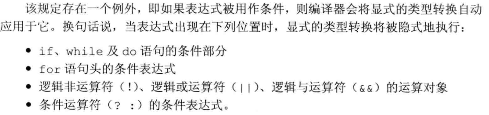

[TOC]
1. 重载运算
本节要点
- 什么时候定义成员运算符，什么时候定义非成员运算符（对称性与访问权限）;
- 常见运算符的推荐签名（例如前置/后置++、operator[]、operator->等）;
- 对于等价性，优先实现
operator==并用它实现operator!=；对于二元算术运算，优先提供非成员operator+以支持隐式类型转换。 - 谨慎定义类型转换运算符以避免二义性，必要时使用
explicit。
1.1 可重载的运算符
[!NOTE]
[!NOTE]
逻辑与、逻辑或：短路求值属性
逗号：求值顺序
取地址：用于类类型对象时的特殊含义
1.2 成员函数或非成员函数
注：一般规则是——如果运算符需要访问类的私有成员，或者其左操作数必须是该类的可修改对象，优先实现为成员函数；否则优先实现为非成员（通常是非成员非友元或友元）以保持对称性和支持隐式类型转换。例如二元算术运算通常实现为非成员。
1.3 运算符介绍
1.3.1 算术和关系运算符( + - * / > < )
[!NOTE]
1.3.2 相等运算符( == )
[!NOTE]
1.3.3 赋值运算符( = )
[!IMPORTANT]
1.3.4 下标运算符( [ ] )
[!IMPORTANT]
1.3.5 递增和递减运算符(++ --)
[!IMPORTANT]
区分前置和后置运算符：
StrBlobPtr operator++; //前置
StrBlobPtr operator--;
StrBlobPtr operator++(int); //后置
StrBlobPtr operator--(int);
显式调用后置运算符
p.operator++(0); //后置
p.operator++(); //前置
1.3.6 成员访问运算符(* ->)
class StrBlobPtr {
public:
//解引用运算符
std::string& operator*() const {
auto p = check(curr, "dereference past end");
return (*p)[curr]; // (*p)是对象所指的vector
}
//箭头运算符
std::string* operator->() const {
// 将实际工作委托给解引用运算符
return &this->operator*();
}
};
注：重载的箭头运算符应返回指针或提供箭头运算符的类型；返回临时对象会导致未定义行为或临时对象被解引用时悬挂。
特殊的箭头运算符
[!NOTE]
重载的箭头运算符必须返回类的指针或者自定义了箭头运算符的某个类的对象
1.3.7 函数调用运算符()
如果类定义了调用运算符，则该类的对象称作函数对象（function object）。因为可以调用这种对象，所以我们说这些对象的“行为像函数一样”。
函数对象常常作为泛型算法的实参。
1.4 函数对象
定义了重载调用运算符的对象
1.4.1 lambda是函数对象
- lambda表达式被翻译为一个匿名类的匿名对象、该类含有一个重载的函数调用运算符。
- 默认情况下lambda不能改变它捕获的变量，因此默认情况下函数调用运算符是一个const成员函数，除非它被声明为可变的。
- 引用捕获的变量被lambda直接使用
- 值捕获的变量被lambda拷贝到类内对应的数据成员中
1.4.2 标准库函数对象
定义在 functional 头文件中
一般在算法中使用标准库函数对象，以改变算法的默认行为，或者避免UB：
sort( svec.begin(), svec.end(), greater<string>() ); //使降序排列sort( PStr.begin(), PStr.end(), less<string*>() );标准库规定，指针的less是定义良好的，而直接使用<是UB
1.5 std::function
定义在
functional头文件中，解决了相同调用形式的可调用对象的类型冲突问题。
// 定义一个 map，其中 key 是操作符，value 是对应的函数对象
std::map<std::string, std::function<int(int, int)>> binops = {
{"+", add}, // 函数指针
{"-", std::minus<int>()}, // 标准库函数对象
{"/", divide}, // 用户定义的函数对象
{"*", [](int i, int j) { return i * j; }}, // 未命名的 lambda
{"%", mod} // 命名了的 lambda 对象
};
//使用map中的操作符
int a = 10, b = 2;
std::cout << "10 + 2 = " << binops["+"](a, b) << std::endl;
std::cout << "10 - 2 = " << binops["-"](a, b) << std::endl;
std::cout << "10 / 2 = " << binops["/"](a, b) << std::endl;
std::cout << "10 * 2 = " << binops["*"](a, b) << std::endl;
std::cout << "10 % 2 = " << binops["%"](a, b) << std::endl;
[!NOTE]
重载函数二义性
虽然重载函数的调用形式不同，但是function无法确定使用者想使用形式匹配的函数还是错误地想使用形式不匹配的重载函数，所以function不能直接存入重载函数的名字，解决方法：
- 传入函数指针
int (*fp)(int, int) = add;- 使用lambda表达式
[] (int a, int b) {return add(a, b) };
2. 类型转换
2.1 类型转换运算符
operator type() const;
- type表示某种可以作为函数返回类型的类型（除了void）
- 必须是类的成员函数
- 不能声明返回类型，但是有返回值
- 形参列表为空
- 通常应该是const函数
[!NOTE]
实践建议：若一个类型转换可能会在隐式场景下造成二义性或意外转换，请将转换运算符声明为 explicit（C++11 起支持）。对于表示“语义上明确的转换”的函数对象和容器操作，应优先使用显式转换以增加代码可读性和安全性。
2.2 显式类型转换（explicit）
[!CAUTION]
显式的类型转换运算符也有可能被隐式执行
- 被隐式转换为bool类型，用于条件判断

- 在列表初始化时发生隐式转换
[!NOTE]
这是一个设计决定，而不是错误，在上下文明确时，设计者允许为了代码的简洁性而隐式调用显式的类型转换运算符。
比如，标准库的io类型可以使用while (std::cin >> value)来读入数据直到发生异常或EOF，原因是std定义了istream向bool的显式类型转换，只有在这种特定情况下会隐式调用。
2.3 避免类型转换二义性
不要在两个类之间建立相同的类型转换
比如A类中A->B的类型转换运算符，B类中A->B的构造函数。
//in class A operator B() const {} //in class B B(const A&);
不要在类中定义两个及两个以上转换源或转换目标是算术类型的转换
A(int = 0);//转换源都是算术类型 A(double); operator int() const;//转换目标都是算术类型 operator double() const; void f2(long double); A a; f2(a); //因为无精准匹配，而且int和double转换到long double的转换级别一致，所以产生了"类型转换二义性" long lg; A a2(lg); //相同的原因产生了"构造二义性"
[!IMPORTANT]
[!WARNING]
2.4 函数匹配与重载运算符
[!NOTE]
[!WARNING]